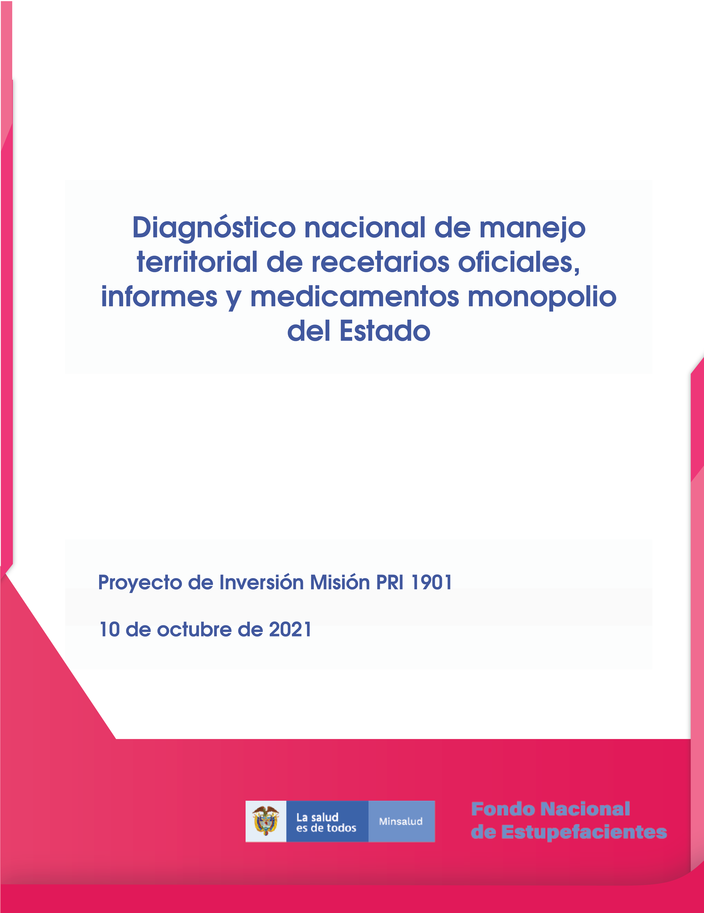

Diagnóstico nacional de manejo de medicamentos monopolio del Estado en Instituciones Prestadoras de Salud y Operadores Logísticos
Informe Final de Visitas Técnicas a Instituciones Prestadoras de Salud (IPS) y Operadores Logísticos
17 de diciembre de 2021
Prefacio

El FNE (Fondo Nacional de Estupefacientes) tiene como objetivo la vigilancia y control sobre la importación, la exportación, la distribución y venta de drogas, medicamentos, materias primas o precursores de control especial, a que se refiere la Ley 30 de 1986 y las demás disposiciones que expida el Ministerio de la Protección Social, así como apoyar a los programas contra la farmacodependencia que adelanta el Gobierno Nacional.
En los últimos años, la planeación de las cantidades de medicamentos monopolio del Estado (MME) para satisfacer la demanda en los entes territoriales se ha visto afectada por:
La variabilidad en el incremento o disminución de la distribución y necesidad de MME.
El desarrollo de guías de práctica clínica en condiciones relacionadas a los medicamentos que hacen parte del portafolio tanto a nivel nacional como internacional.
La calidad de la información de disponibilidad remitida por los Fondos Rotatorios de Estupefacientes (FRE).
Las diferentes barreras administrativas de índole territorial que impactan en el acceso de estos medicamentos por parte de los pacientes.
Por consiguiente, el desarrollo de este proyecto se enmarca en una estrategia integral con el fin de contribuir a mejorar la calidad de la atención de los pacientes y a la salud pública del país, garantizando el acceso, disponibilidad y uso racional de los medicamentos de control especial y MME.
En la formulación del proyecto se planteó la entrega de productos relacionados con un análisis del rol del FNE, FRE e instituciones prestadoras de salud (IPS) en la cadena de suministro de medicamentos monopolio del Estado y su ciclo de uso, todo orientado a la utilización racional de estos medicamentos en todo el territorio nacional. Esto productos pueden constituir una fuente de información consolidada para el desarrollo del Recetario Oficial Electrónico (ROE), así como en el desarrollo de herramientas que permitan estandarizar los procesos de proyección de compra y el seguimiento de inventarios de MME por parte de los entes territoriales, de tal manera que se mitigue el riesgo de desabastecimiento mediante la gestión de inventarios acorde a las necesidades de la población.
El trabajo territorial es una experiencia de aprendizaje recíproco y constante. Dentro de las Jornadas de inmersión territorial se observó, no solamente las condiciones actuales en la que se encuentran los FRE alrededor de la Nación, sino el entusiasmo con la que los funcionarios se interesan por el bienestar y la salud pública de sus regiones, aún cuando se presentan diferentes adversidades y altibajos en el desarrollo de las procesos en sus departamentos.
Agradecemos a cada referente de cada FRE y a cada funcionario de apoyo, por tan acogedor recibimiento del que hicieron partícipe al equipo territorial del Proyecto de Inversión 1901, reafirmando que parte de la belleza de Colombia es la calidez y amabilidad de sus habitantes. También queremos agradecer al FNE y a su íntegro equipo, coordinadores y apoyos territoriales, por brindarnos todos los recursos, herramientas y ser una guía para llevar a cabo el proceso de esta investigación.